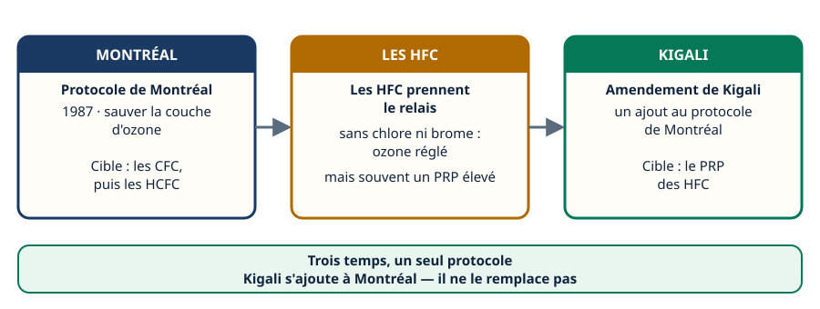
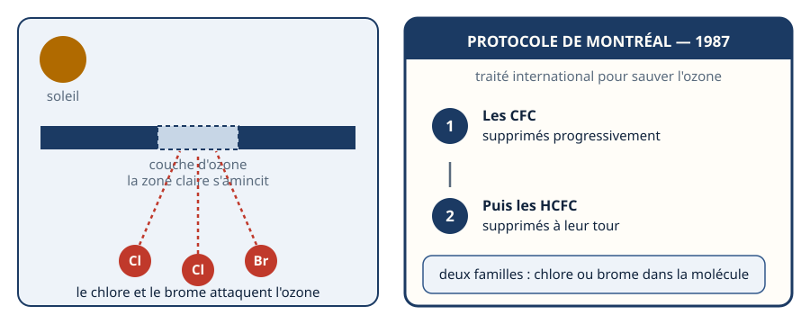
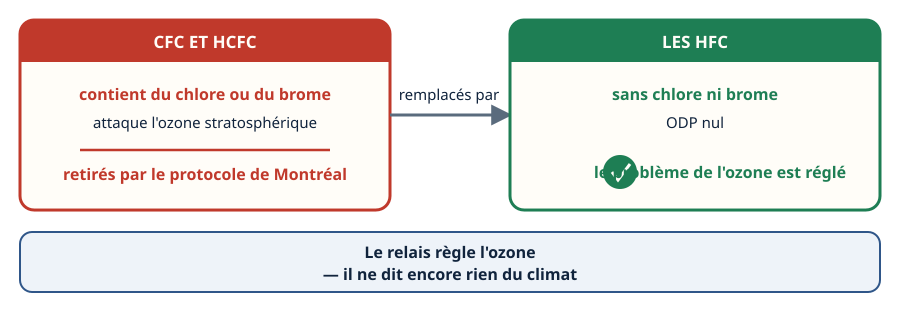
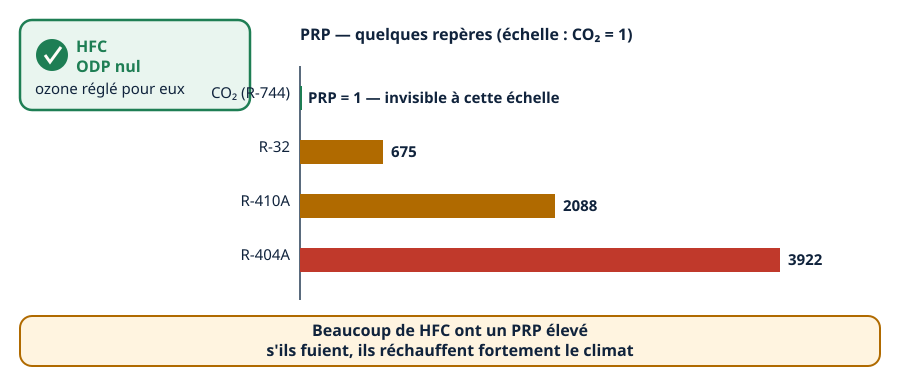
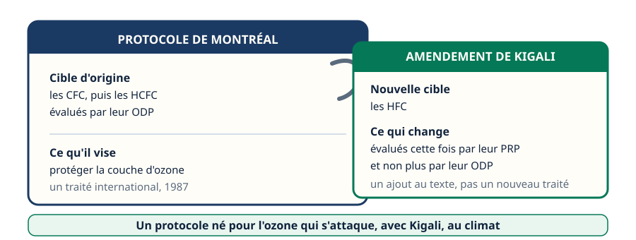
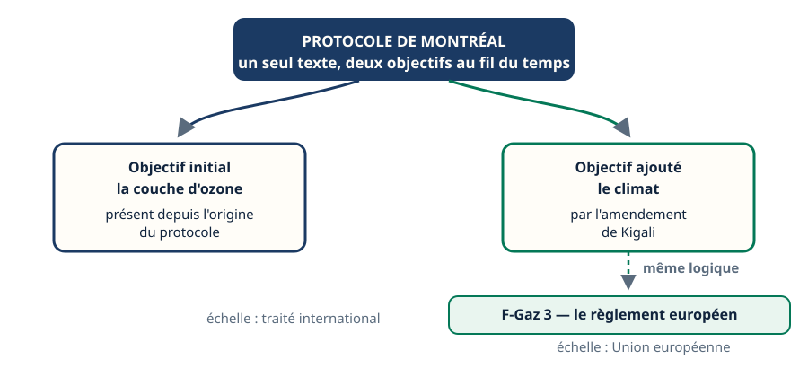
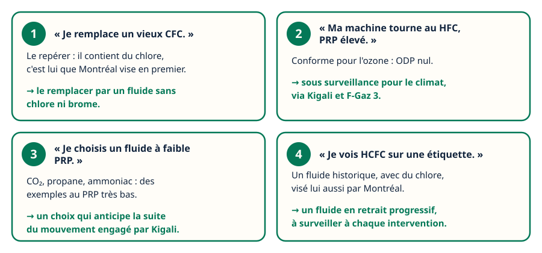

Mini-station commentée · 8 écrans et 4 questions · environ 10 minutes
Objectif
À la fin de la station, vous savez expliquer pourquoi le protocole de Montréal a d'abord visé les CFC et les HCFC, pourquoi les HFC les ont remplacés, quel nouveau problème ces HFC ont posé malgré un ozone sauvé, et ce que change l'amendement de Kigali — le tout comme un enchaînement logique, pas une liste de dates à apprendre par cœur.
Chaque écran peut être expliqué à voix haute : le bouton « Écouter » commente ce que vous voyez. Rien n'est dit qui ne soit aussi écrit.
1 / 12
Écran 1 sur 8
Trois temps, un seul protocole
L'histoire se lit en trois temps, dans l'ordre : le protocole de Montréal, en 1987, pour sauver la couche d'ozone ; le relais des HFC, qui règle ce problème d'ozone mais en ouvre un autre ; et l'amendement de Kigali, qui vient s'ajouter au même texte pour s'occuper de ce second problème.
Retenez l'enchaînement plutôt que des dates : chaque temps répond au problème laissé ouvert par le précédent. Seule 1987 est une date à connaître ici.

Trois cases, deux flèches : un enchaînement, pas trois histoires séparées.
Écran 2 sur 8
Montréal, 1987 : le problème de l'ozone
Le protocole de Montréal est un traité international signé en 1987 pour protéger la couche d'ozone stratosphérique. Sa cible : des molécules contenant du chlore ou du brome, qui attaquent l'ozone quand elles montent dans l'atmosphère.
Le texte vise d'abord les CFC, supprimés progressivement, puis, dans un second temps, les HCFC, qui en contiennent aussi mais en moindre quantité.

Chlore et brome : le point commun des deux familles visées.
Écran 3 sur 8
Les HFC prennent le relais
Les HFC remplacent progressivement les CFC et les HCFC parce qu'ils ne contiennent ni chlore ni brome : leur ODP est nul. Pour cette famille de fluides, le problème de l'ozone est réglé.
C'est un vrai succès du protocole de Montréal — mais il ne dit rien, à ce stade, d'un autre impact possible de ces mêmes fluides.

ODP nul : l'ozone est réglé pour les HFC.
Écran 4 sur 8
Mais un nouveau problème apparaît
L'ozone est réglé — le climat, pas forcément. Beaucoup de HFC ont un PRP élevé : s'ils fuient, ils réchauffent fortement le climat, même si leur ODP reste nul.
Quelques repères de PRP pour situer l'écart : le CO₂ (R-744) vaut 1, le R-32 vaut 675, le R-410A vaut 2088, le R-404A vaut 3922. C'est le sujet de la station PRP & ODP, à laquelle celle-ci se raccroche.

L'écart de grandeur entre le CO₂ et le R-404A dit tout du problème.
Écran 5 sur 8
L'amendement de Kigali
L'amendement de Kigali est un amendement au protocole de Montréal — pas un nouveau traité séparé. Il s'attaque à son tour aux HFC, mais cette fois pour leur PRP, et non plus pour leur ODP.
Le même texte international traite donc, dans l'ordre, deux problèmes différents avec deux outils différents : l'ODP pour l'ozone, le PRP pour le climat.

Une note agrafée, pas un nouveau document : Kigali s'ajoute à Montréal.
Écran 6 sur 8
Pourquoi c'est notable
Un protocole conçu pour l'ozone qui se met, avec Kigali, à traiter du climat : c'est ce qui rend ce texte particulier. L'objectif d'origine ne disparaît pas, un second s'y ajoute.
Cette même logique — réduire progressivement les HFC pour leur PRP — se retrouve dans F-Gaz 3, le règlement européen du même réseau : il l'applique à l'échelle de l'Union européenne.

Même logique, deux échelles : le traité international, puis le règlement européen.
Écran 7 sur 8
Le raisonnement : quatre situations de terrain
« Je remplace un vieux CFC. » → Le repérer : il contient du chlore, c'est lui que Montréal vise en premier. Le remplacer par un fluide sans chlore ni brome.
« Ma machine tourne au HFC, PRP élevé. » → Conforme pour l'ozone, ODP nul. Sous surveillance pour le climat, via Kigali et F-Gaz 3.
« Je choisis un fluide à faible PRP. » → CO₂, propane, ammoniac : des exemples au PRP très bas. Un choix qui anticipe la suite du mouvement engagé par Kigali.
« Je vois HCFC sur une étiquette. » → Un fluide historique, avec du chlore, visé lui aussi par Montréal. En retrait progressif.

Dans les quatre cas, la même logique : chlore et brome pour l'ozone, PRP pour le climat.
Écran 8 sur 8
Bilan : le mécanisme, en une phrase
Montréal, 1987 : protéger la couche d'ozone, en visant les CFC puis les HCFC — des molécules au chlore ou au brome.
Les HFC les remplacent : sans chlore ni brome, l'ODP est réglé.
Mais beaucoup de HFC ont un PRP élevé : l'ozone est sauvé, le climat pas.
Kigali s'ajoute à Montréal pour s'attaquer aux HFC, cette fois par leur PRP.
F-Gaz 3, même réseau, applique cette logique à l'échelle de l'Union européenne.